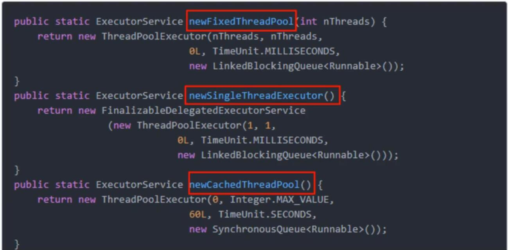
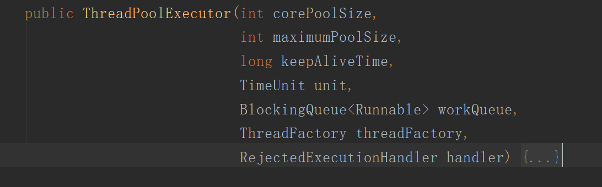
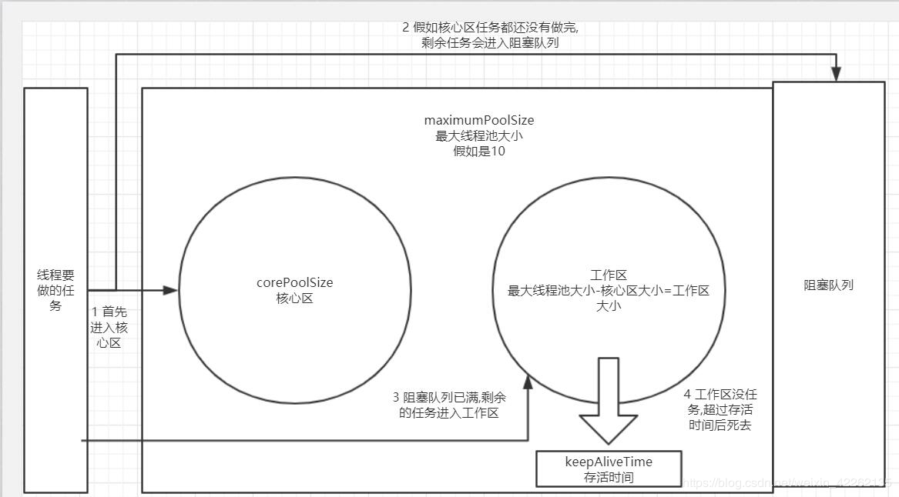

Java线程池原文出处:本文由博客园博主花里胡哨的程序员提供。
原文连接:https://www.cnblogs.com/jianjieming/p/11584727.html
线程池做的主要工作是控制运行的线程的数量，处理过程中将任务放入队列，然后在线程创建后启动这些任务，如果线程数量超过了最大数量，超出数量的线程排队等待，等其他线程执行完毕，再从队列中取任务来执行。
- Executor 线程池的顶级接口。
- Executors 线程池相关的工具类。
线程池的主要特点为：线程复用；控制最大并发数；管理线程
- 降低资源消耗。通过重复利用已创建的线程，降低线程创建和销毁造成的的消耗。
- 提高响应速度。当任务到达时，不需要等到线程创建，可以立即执行。
- 提高线程的可管理性。线程是稀缺资源，如果无限制的创建，不仅会消耗系统资源，还会较低系统的稳定性，使用线程池可以进行统一的分配，调优和监控。
常用的三种线程池
ExecutorService fixedThreadPool = Executors.newFixedThreadPool(5);
创建指定处理线程数量的线程池，适合执行长期的任务，性能好很多。
ExecutorService singleThreadExecutor = Executors.newSingleThreadExecutor();
创建只有一个处理线程的线程池，适合一个任务一个任务执行的场景。
ExecutorService cachedThreadPool = Executors.newCachedThreadPool();
创建N个处理线程的线程池，该线程池类似会自动扩容，适合执行很多短期异步的小程序或者负载较轻的服务器。
ExecutorService threadPoolExecutor = new ThreadPoolExecutor(5, 10, 60, TimeUnit.SECONDS, new LinkedBlockingQueue<>(10));
以上3个常用线程池，底层都是使用该线程池，根据不同的参数，生产不同的线程池。
底层七个参数的含义（正常创建使用5参的就行）：
- corePoolSize 核心线程池大小，线程池中的常驻核心线程数。
- maximumPoolSize 最大线程池大小，线程池能够容纳同时执行的最大线程数，此值必须大于等于1。
- keepAliveTime 存活时间，工作区空闲线程的存活时间，当前线程数量超过corePoolSize并且空闲时间达到keepAliveTime值时，多余的空闲线程会被销毁，直到只剩下corePoolSize个线程为止。
- unit 时间单位
- workQueue 任务队列，被提交但尚未执行的任务。
- threadFactory 表示生成线程池中工作线程的线程工厂，用于创建线程，一般用默认的即可。
- handler 拒绝策略，表示当队列满了并且工作线程大于等于线程池的最大线程数(maximumPoolSize)时如何来拒绝请求执行的runnable的策略。
七参数创建方式如下：
ExecutorService service = new ThreadPoolExecutor(
2,
5,
10L,
TimeUnit.SECONDS,
new LinkedBlockingQueue<>(3),
Executors.defaultThreadFactory(),
new ThreadPoolExecutor.AbortPolicy()
);
源码如下：


拒绝策略
等待队列已经排满了，再也塞不下新任务了，同时线程池中的max线程也达到了，无法继续为新任务服务。这时候我们需要拒绝策略机制合理的处理这个问题。
jdk内置的拒绝策略：
- AbortPolicy(默认)：直接抛出RejectedExecutionException异常，阻止系统正常运行。
- CallerRunsPolicy：“调用者运行”一种调节机制，该策略既不会抛弃任务，也不会抛出异常，而是将某些任务回退到调用者，从而降低新任务的流量。
- DiscardOldestPolicy：抛弃队列中等待最久的任务，然后把当前任务加入队列中尝试再次提交当前任务。
- DiscardPolicy：直接丢弃任务，不予任何处理也不抛出异常。如果允许任务丢失，这是最好的一种方案。
以上内置策略均实现了RejectedExecutionHandler接口。
线程池运行过程
- 当创建了线程池后，等待提交过来的任务请求。
- 当调用execute()方法添加一个请求任务时，线程池会做如下判断：
- 如果正在运行的线程数量小于corePoolSize，那么马上创建线程运行这个任务；
- 如果正在运行的线程数量大于或等于corePoolSize，那么将这个任务放入队列。
- 如果这时候队列满了且正在运行的线程数量还小于maximumPoolSize，那么还是要创建非核心线程（也叫工作区线程）来立刻运行这个任务；
- 如果队列满了且正在运行的线程数量大于或等于maximumPoolSize，那么线程池会启动饱和和拒绝策略来执行。
- 当一个线程完成任务时，它会从队列中取下一个任务来执行。
- 当一个线程无事可做超过一定的时间（keepAliveTime）时，线程池会判断：
- 如果当前运行的线程数大于corePoolSize，那么这个线程就被停掉。
- 所以线程池的所有任务完成后，最终会收缩到corePoolSize的大小。

禁止使用Executors来创建线程池
线程池不允许使用 Executors去创建，而是通过ThreadPoolExecutor的方式，这样 的处理方式让写的同学更加明确线程池的运行规则，规避资源耗尽的风险。
说明：Executors返回的线程池对象的弊端如下：
- FixedThreadPool和 SingleThreadPool: 允许的请求队列长度为 Integer.MAX_VALUE，可能会堆积大量的请求，从而导致 OOM。
- CachedThreadPool和 ScheduledThreadPool: 允许的创建线程数量为 Integer.MAX_VALUE，可能会创建大量的线程，从而导致 OOM。
线程池参数配置
- CPU密集型：CPU密集的意思是该任务需要大量的运算，而没有堵塞，CPU一直全速运行。CPU密集任务只有在真正的多核CPU上才可能得到加速（通过多线程）。
而在单核CPU上，无论你开几个模拟的多线程该任务都不可能得到加速，因为CPU总的运算能力就那些。
CPU密集型任务配置尽可能少的线程数量：
一般公式：CPU核数+1个线程的线程池。
- IO密集型：即该任务需要大量的IO，即大量的阻塞。
在单线程上运行IO密集型的任务会导致浪费大量的CPU运算能力浪费在等待。
所以在IO密集型任务中使用多线程可以大大的加速程序运行，即使在单核CPU上，这种加速主要就是利用了被浪费掉的阻塞时间。
参考配置：
由于IO密集型的任务线程并不是一直在执行任务，则应配置尽可能多的线程，如CPU核数*2。
或者：
CPU核数 / 1 - 阻塞系数--------阻塞系数在0.8~0.9之间
比如8核CPU： 8 / (1 - 0.9) = 80个线程数。
使用：Runtime.getRuntime().availableProcessors() 获取当前CPU核数。
如果觉得对你有帮助，欢迎来访我的博客：http://jianjieming.com